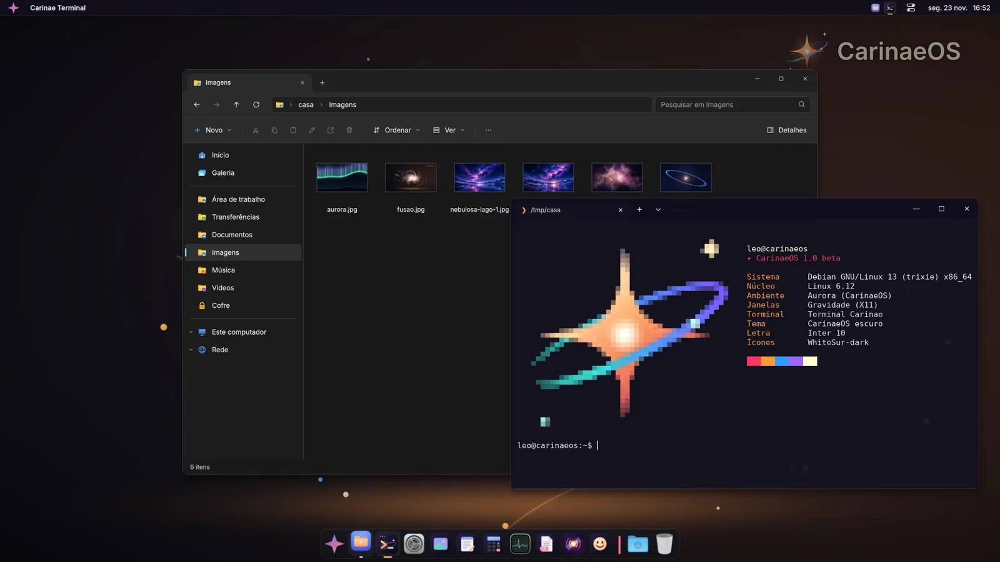
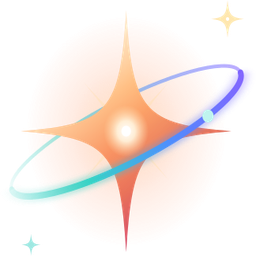

CarinaeOS Um ambiente de trabalho novo, feito de raiz.
Baixar a ISO 1.0 betaEsta página é uma área de trabalho. Use a Dock em baixo para abrir as janelas.
Sobre o CarinaeOS
CarinaeOS é um sistema Linux com um ambiente de trabalho todo novo: o gestor de janelas Gravidade, o shell Aurora e a família de apps Carinae.
Não é um tema nem uma modificação do KDE, do GNOME ou do XFCE. Cada peça foi escrita para o CarinaeOS, perto de 40 mil linhas de código próprio, e a ISO assenta na base estável do Debian 13.
Foi feito para quem quer um Linux bonito e fácil desde o primeiro minuto, sem precisar de abrir o terminal. O nome vem de Eta Carinae, uma das estrelas mais brilhantes e instáveis da nossa galáxia.
Versão 1.0 beta: já se usa e instala, mas ainda pode ter arestas. Criado por Leonardo Mendes com o Claude (Anthropic). Código livre sob GPL-2.0-or-later.
Feito de raiz
Quatro camadas, todas do CarinaeOS. Por baixo, só as bibliotecas comuns a qualquer programa Linux.
- Apps Carinae
- Documentos, Terminal, Configurações, Comando, Monitor, Fotos, PDF, Notas, Calculadora, Compactador e Emojis, todos com o mesmo visual e os mesmos atalhos.
- Python, PySide6 e QML; o Terminal em C++
- Aurora
- O shell: papel de parede, a barra de cima com o menu da estrela, a Dock com a luz dourada e pré-visualização das janelas, e o Launchpad com ambientes.
- C++ e Qt 6 / QML
- Gravidade
- O gestor de janelas: molduras com os botões à esquerda, encaixar nas metades e em zonas, quatro áreas de trabalho, vários monitores e todos os atalhos.
- C++ sobre XCB e cairo
- Sessão
- Arranque da sessão, bloqueio do ecrã, janela de senha e gestão de energia.
- C++ e shell
- Base
- Linux, X11, Qt 6, PAM e polkit. Na ISO, o Debian 13.
Carinae Fotos

novidades-1.0-beta.txt
- Papel de parede Fusão, criado para o CarinaeOS, até 8K.
- O ambiente instala-se também em Ubuntu, Fedora, Arch e openSUSE.
- No Launchpad, os aplicativos que instala depois ficam em Novos aplicativos até escolher o ambiente deles.
- A Dock muda de modelo logo nas Configurações, com a luz dourada ligada de origem.
- Sem restos do KDE: tudo abre os apps Carinae.
- Placas NVIDIA antigas (Kepler, como a GT 710) instalam pela Central sem ficar com a tela preta.
- Um computador desligado na rede já não deixa o sistema lento à espera dele.
Carinae Monitor: requisitos
- Processador
- 64 bits (x86-64)
- Memória
- 4 GB (8 GB recomendado)
- Disco
- 30 GB
- Arranque
- UEFI ou BIOS antigo; instala ao lado do Windows
- Gráficos
- Intel, AMD e NVIDIA (incluindo placas antigas pela Central)
Transferências

CarinaeOS 1.0 beta
ISO para computadores de 64 bits, 2,5 GB em duas partes
-
Baixe as duas partes
O GitHub só aceita arquivos até 2 GB, por isso a ISO vem dividida. Guarde as duas na mesma pasta.
-
Junte as partes numa ISO
Abra a pasta, escreva
cmdna barra de endereço e carregue em Enter. Depois:copy /b CarinaeOS-1.0-amd64.iso.parte00 + CarinaeOS-1.0-amd64.iso.parte01 CarinaeOS-1.0-amd64.isoNo PowerShell, escreva
cmd /cantes do mesmo comando.No Terminal, dentro da pasta:
cat CarinaeOS-1.0-amd64.iso.parte* > CarinaeOS-1.0-amd64.isoNo terminal, dentro da pasta:
cat CarinaeOS-1.0-amd64.iso.parte* > CarinaeOS-1.0-amd64.isoConfirmar que a ISO veio inteira
O código SHA-256 da ISO juntada tem de ser este:
ca504ea8262362f3bee78be645d07549918d0a8e62cd4d24e8d92825437eba41Windows:
certutil -hashfile CarinaeOS-1.0-amd64.iso SHA256· macOS:shasum -a 256 CarinaeOS-1.0-amd64.iso· Linux:sha256sum CarinaeOS-1.0-amd64.iso -
Experimente e instale
Grave a ISO num pen drive de 4 GB ou mais com o balenaEtcher ou o Rufus (modo DD) e arranque por ele. Também funciona numa máquina virtual, com 4 GB de memória e 30 GB de disco.
A sessão de experimentar entra sozinha. Gostou? Carregue em Instalar o CarinaeOS, o primeiro ícone da Dock.
Todas as versões e notas: página da versão no GitHub.
Terminal Carinae: instalar noutra distribuição
# Já usa Linux? A Gravidade, a Aurora e os apps Carinae instalam-se ao lado do ambiente que tem.
# Testado automaticamente em Debian 13, Ubuntu 25.10, Fedora, Arch Linux e openSUSE Tumbleweed.
leo@linux:~$ curl -LO https://github.com/leothemurphy/CarinaeOS/releases/download/ambiente-v1.0-beta/carinaeos-ambiente-1.0-beta.tar.gz
leo@linux:~$ tar xf carinaeos-ambiente-1.0-beta.tar.gz
leo@linux:~$ cd carinaeos-ambiente-1.0-beta
leo@linux:~/carinaeos-ambiente-1.0-beta$ ./instalar-universal.sh# Depois termine a sessão e escolha "CarinaeOS (Gravidade)" na tela de entrada.
# Para desinstalar: ./instalar-universal.sh --remover